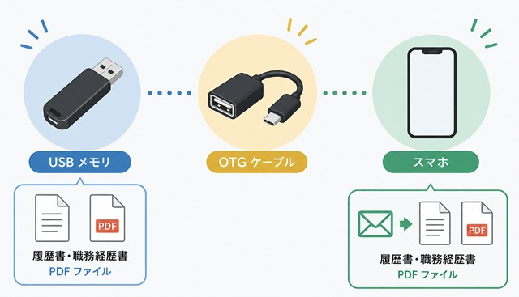

OTGケーブルとは？パソコンで作った履歴書をスマホから送る便利な方法
履歴書や職務経歴書は、パソコンで作成するよう求められる企業も多くあります。しかし、学習環境やご自宅の通信環境によっては、以下のような状況で困っている方も少なくありません。
- 「古いパソコンでWordやExcelは使えるけれど、インターネットにはつながっていない」
- 「メールはスマートフォンしか使っていない（設定がわからない）」
- 「PDFにした履歴書を、どうやってスマホへ移して企業へ送ればいいか分からない」
そんなときに役立つのが、OTGケーブルです。OTGケーブルを使えば、USBメモリに保存した履歴書や職務経歴書（PDF）をスマートフォンで開き、そのままメールに添付して企業へ送信できるようになります。
OTGケーブルはこんな方におすすめ
この方法は、次のような状況で就職活動を進めている方に特におすすめです。
- パソコンで書類は作れるが、そのパソコンはインターネットに接続していない
- パソコンではメールの送受信設定ができていない（ウェブメールも使えない）
- 普段使い慣れているスマートフォンのメールアプリから応募書類を送りたい
パソコンで書類を完成させてPDF保存し、USBメモリへコピーしておけば、あとはOTGケーブルを使ってスマートフォンへ取り込むだけで、送信準備が整います。
「パソコンで書類を作り、スマホで送る」という方法は、実は合理的です。パソコンの広い画面で誤字脱字なく書類を仕上げ、使い慣れたスマホのメール機能で確実に送信する。この「橋渡し」をしてくれるのがOTGケーブルなのです。
OTGケーブルとは？
OTG（On-The-Go）ケーブルとは、AndroidスマートフォンやUSB Type-C対応のiPhoneで、USBメモリなどを直接接続するための変換ケーブルです。
通常、スマートフォンにはUSBメモリを直接差し込むことはできません。OTGケーブルを間に挟むことで、スマートフォンがUSBメモリを「外部保存装置」として認識し、中のファイルを開いたりコピーしたりできるようになります。
家電量販店などで探す際は、「OTG対応」や「USBホスト機能対応」と表記されているものを選びましょう。

▲ PCで作成したデータを、物理的なケーブル経由でスマホへ移動させます
OTGケーブルを使う流れ
手順はとてもシンプルで、ITに詳しくない方でもすぐに実行できます。
パソコンで履歴書・職務経歴書を作成する
必ず「PDF形式」で保存する
PDFファイルをUSBメモリへコピーする
USBメモリをOTGケーブル経由でスマホに繋ぐ
スマホのファイル管理アプリでPDFを確認する
メールに添付して企業へ送信する
100円ショップなどで販売されている「充電専用」のUSBケーブルでは、データのやり取りを行うことはできません。必ず「データ転送対応」または「OTG対応」と明記されているケーブル、もしくはアダプタを選んでください。
価格はどれくらい？
OTGケーブルは、家電量販店やネット通販で1,000円前後で購入できます。また、最近では100円ショップでも「OTGアダプタ」として小さな部品が販売されていることがあります。
価格も高くないため、1本持っておけば就職活動だけでなく、スマホで撮った写真をパソコンに移したり、バックアップを取ったりする際にも活用できる便利なアイテムです。
スマホに取り込んだ後、必ず一度PDFを開いてみてください。 意図した通りに文字が表示されているか、保存するファイル（氏名や日付）を間違えていないか。企業が実際に見る画面を自分のスマホで確認できるのが、この方法の隠れたメリットでもあります。
まとめ：道具を賢く使って「伝わる書類」を届けよう
OTGケーブルは、インターネット環境に左右されず、パソコンの高い作成能力とスマートフォンの高い通信能力を繋いでくれる便利な「橋渡し役」です。
- PCはオフラインでも、USBメモリとOTGケーブルがあれば送信できる。
- PDF形式での送信は、実務上のマナーとしても正解。
- 「充電専用」ではなく「データ転送・OTG対応」のものを選ぶ。
「パソコンのメール設定ができないから送れない」と諦める必要はありません。身近な道具を賢く使って、あなたが時間をかけて作った大切な履歴書を、確実に志望企業へ届けましょう。あなたの就職・転職活動が実を結ぶよう、心から応援しています。